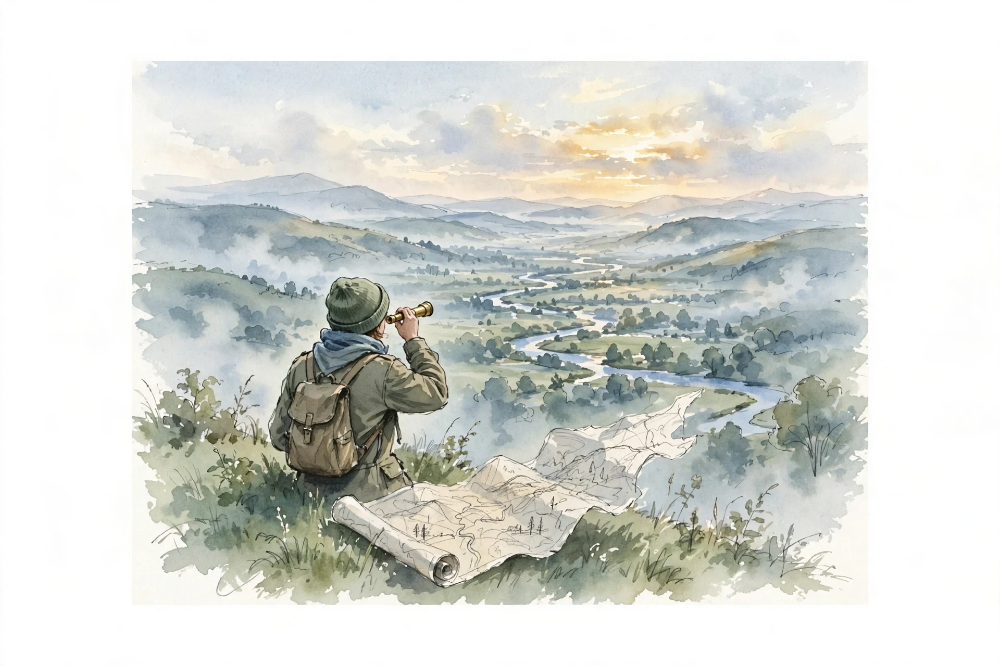

Clearer Thinking with Spencer Greenberg · Episode 6
Scout and Soldier Mindsets with Julia Galef
Spencer Greenberg talks with Julia Galef about why the bottleneck is motivation, not knowledge: the scout who maps the terrain, the soldier who defends the hill, and how to switch sides.

Illustration. AI-generated watercolor made for this page: the scout's job is to see what is really there and draw the map.
Video. The full episode on YouTube.
~00:00
Soldier and Scout
The Scout's role is to go out and just see what's really there
Julia Galef · Episode ~00:02
Source fact The book is The Scout Mindset, published April 13th. Scout mindset is the motivation to see things as they are, not as you wish they were: another name for intellectual honesty and curiosity about what is actually true.
Source fact The default is soldier mindset: the motivation to defend pre-existing beliefs against threatening evidence. Unlike the soldier, the scout does not attack or defend. The scout maps the terrain as accurately as possible.
Nugget 1 · Framing
Name the mode before the argument
What happened. Spencer's move in any disagreement: check first whether both sides are in scout mode. If not, the object-level debate cannot work.
Why it matters. A soldier hears arguments as attacks. A scout hears them as data. The same words land in different games.
The principle. Diagnose the mindset before you debate the claim.
~00:08
The Bottleneck Is Motivation
Source fact In 2012 Galef co-founded the Center for Applied Rationality, running workshops on reasoning from cognitive science, economics, and philosophy. Her view shifted with experience.
Source fact The naive theory: teach people biases and fallacies, and reasoning improves. The observed reality: people online accuse others of bias and never turn the lens on themselves. The bottleneck is not knowing how to reason. It is the motivation to reason toward the truth instead of toward defending what you already believe.
Interpretation Knowledge of logic is necessary but not sufficient. Until motivation is right, reasoning skill is a weapon for the soldier: confirmation bias with better tools.
Nugget 2 · Motivation
Motivation comes before method
What happened. Years of teaching reasoning convinced Galef that the binding constraint is which master the reasoning serves.
Why it matters. Skills are amplifiers. Point them at truth-seeking and they help. Point them at defense and they harden the walls.
The principle. Fix the motivation first. Then the techniques pay off.
~00:15
When Are We Naturally Scouts?
Source fact Nobody is always a soldier or always a scout. We are mixes, varying by day, context, and topic. The question is what tips us one way or the other.
Source fact Two motives decide: how much you want the truth in this situation, and how much you want to believe some particular answer regardless of truth. Finding an address is pure scout: the truth pays immediately, and no identity rides on the answer. Politics is the mirror image: strong motive to defend the tribe's answer, almost no direct benefit from being right.
Source fact Robin Hanson's metaphor: beliefs are apparel. We choose them, partly unconsciously, to signal what kind of person we are, sophisticated, edgy, in-group, much as we choose a skirt length. Even contrarians often pick the standard contrarian outfit.
Nugget 3 · Motives
Follow the payoff, find the mindset
What happened. Scout mode appears where truth pays and identity is cheap. Soldier mode appears where identity pays and truth is cheap.
Why it matters. You can predict your own distortion by asking which payoff dominates this topic.
The principle. Where the tribe pays you to believe, budget extra skepticism.
~00:22
Rational Irrationality
Source fact The sharpest objection: rational irrationality, a term from economist Bryan Caplan. Humans may intuitively choose just enough epistemic irrationality to serve their goals. If we already dose soldier mindset optimally, a book on scout mindset has nothing to offer.
Source fact Galef's reply: the theory assumes minds are optimized for our interests, but present bias shows they are not. We overweight immediate consequences, breaking diets, procrastinating. The same bias infects belief: soldier mindset feels good now, scout mindset pays later. So we default to soldier more often than our own interests justify.
Interpretation Scout mindset is a habit of mind, not a one-off choice. Every admitted error trains the general habit of second-guessing first impressions, which pays directly in business and relationships where the stakes are real.
Present bias in belief
Why the default overshoots soldier mindset, drawn illustratively.
Source: Clearer Thinking, Julia Galef episode, ~00:22. An illustrative rendering of the argument, not measured data.
Nugget 4 · Habits
Practice scout mode where the stakes are low
What happened. Admitting error on politics has no direct payoff, but it trains the habit that saves you where payoffs are real.
Why it matters. You cannot switch the habit on only when stakes are high. Habits do not work that way.
The principle. Rehearse truth-seeking in safe arenas so it is ready in dangerous ones.
~00:30
The Self-Belief Model of Motivation
Source fact Objection one: hard things need self-delusion. Founders supposedly need overconfidence to attempt startups. Galef calls this the self-belief model of motivation, and offers Jeff Bezos as counter-evidence.
Source fact Quitting Wall Street for Amazon, Bezos estimated about a 30 percent chance of success: a 10 percent base rate for internet startups, adjusted upward for his team and idea. The self-belief model predicts failure for such a founder. Bezos succeeded anyway.
Source fact The alternative motivator is expected value: probability of success times value of success, plus probability of failure times value of failure. A bet can be strongly positive even when failure is the likely outcome. Her example: roll a die, win $1,000 on a six, lose $1 otherwise. You will probably lose, and you should still take the bet.
The die bet, expected value
Galef's example: a six pays $1,000, anything else costs $1.
Source: Clearer Thinking, Julia Galef episode, ~00:30. Computed from the episode's figures: (1/6) x $1,000 - (5/6) x $1.
Try it: price the bet
Move the sliders. Watch expected value stay positive long after success looks unlikely.
Nugget 5 · Motivation
Get motivated by the bet, not the certainty
What happened. Bezos took the Amazon bet at 30 percent because the upside dwarfed the tolerable downside.
Why it matters. Motivation does not require delusion. It requires a positive expected value and a stomach for the likely loss.
The principle. Price the downside. If you can afford it, the long shot is rational.
~00:38
Musk's Ten Percent Bets
Source fact Elon Musk assigned Tesla and SpaceX each about a 10 percent chance of success, even lower than Bezos. Interviewers kept asking: why try, if you expect to fail? His answer: if it is important enough, try anyway, even when failure is the likely outcome.
Source fact Failure was tolerable: no personal ruin, and even a failed attempt would move the mission forward, electric cars made exciting, a baton passed toward an interplanetary species. At 10 percent of an enormous upside against a tolerable downside, both bets had positive expected value.
Interpretation A life is a portfolio of bets made in sequence, not all at once. The collection of positive expected value bets can be a good wager even when no single bet deserves confidence. Musk's track record since suggests, if anything, he was underconfident.
Nugget 6 · Portfolios
Think in portfolios, not in single bets
What happened. Investors accept that most bets fail while the portfolio rises. Lives work the same way, staggered through time.
Why it matters. Each roll also teaches you, so later bets are better priced than earlier ones.
The principle. Maximize the portfolio's expected value, not any single bet's chance of success.
~00:45
Two Kinds of Confidence
Source fact Objection two: leaders must project certainty. Galef's research dissolved the trade-off by splitting confidence in two. Epistemic confidence is certainty in your beliefs. Social confidence is self-assurance: tone, posture, energy, drive.
Source fact What persuades is social confidence, not epistemic certainty. Bezos told early investors there was about a 70 percent chance Amazon would fail, and they invested anyway. They cited his passion, energy, and homework, not any promise of a sure thing.
Source fact Precision can backfire socially: saying 87 percent sounds more arrogant than 85, which sounds more arrogant than 80. But uncertainty stated well reads as command: people hear 61 percent and think, this person did the homework.
Interpretation Wording does the work. Saying the team will be the best in the world at something sounds delusional. Saying the goal is to be the best is fully honest and lands almost identically. Find the closest statement you fully believe, then say it with confidence.
Nugget 7 · Confidence
Sound certain about the honest thing
What happened. Bezos raised money while advertising a 70 percent failure chance. Investors bought the person, not the probability.
Why it matters. You can be influential without sacrificing calibration. The trade-off was an illusion.
The principle. State the strongest true version of your claim, and say it like you mean it.
~00:53
Coping Without Self-Deception
Source fact Objection three: we need self-deception to cope, to protect the ego from failure and insecurity. Galef's answer: the coping bucket holds many strategies, and most people grab the first one. Rummage for one at the intersection of comforting and true.
Source fact The distinction matters: reframing is honest, self-delusion is not. Focusing on the positives of being alive is a reframe. Telling yourself everything happens exactly the way it needs to, as a law of the universe, is delusion, and it teaches you not to prevent the preventable.
Source fact Carol Tavris and Elliot Aronson's book on self-justification argues we must fool ourselves a little to avoid drowning in regret. Galef's counter: shrug, learn, and move on. Plenty of people say, I could have done that better, and I have a better chance next time, and feel fine.
Nugget 8 · Coping
Rummage the coping bucket for the true one
What happened. The same comfort can come from a reframe or a falsehood. People conflate the two and conclude delusion is necessary.
Why it matters. Silver linings work without denying the cloud: the dark thing happened, and here is also something good.
The principle. When you catch a self-deceptive comfort, swap it for an honest reframe.
~01:00
Borrow Their Weapons
if you really want to feel good about yourself for being right, be right
Julia Galef · Episode ~01:02
Source fact Galef's replacement for the sting of conceding: admitting you were wrong invests in future credibility. People trust the person who visibly updates. The concession is an investment in your future persuasiveness.
Source fact The Monkey Island reframe: in the old game, losing an insult duel taught you the pirate's rejoinder, which you kept for future duels. Lose an argument well and you borrow the winner's weapons for next time.
Interpretation Soldier mindset fails its own goal on a long horizon: defending weak beliefs leaves you with weaker arguments and fewer true beliefs, so you lose the war of ideas you wanted to win.
Nugget 9 · Updating
Want to be right in general, not in this argument
What happened. The desire to be right helps when aimed at the long term and hurts when aimed at the moment.
Why it matters. Every conceded point is data that trains a better map and a deposit in your credibility account.
The principle. Lose the battle on purpose when the tuition buys the war.
~01:07
Betting and the Press Secretary
Source fact Robert Kurzban's analogy: much of our thinking is a press secretary, whose job is to say things plausible enough to make the company look good, not finding truth. The board of directors is the contrast: real stakes, real decisions, thrive or fail on getting it right.
Source fact Betting moves you from press secretary to board. Even imagining the bet works. Galef's test: claim you were right in a fight with your partner, then imagine betting $1,000 that a neutral third party, shown the argument blind, sides with you. Notice how the confidence wobbles.
Source fact The toothpaste version: the press secretary brags the toothpaste whitens best. The board, offered a published dental-school showdown, declines. Operationalizing the belief, what would it look like to find out, exposes what you actually believe.
Nugget 10 · Calibration
Imagine the bet before you trust the claim
What happened. Claims are cheap. Bets have stakes. Picturing the stakes forces the belief into concrete form.
Why it matters. The more abstract the claim, the easier the self-deception. Operationalizing is the antidote.
The principle. Ask: would I take $1,000 on this? Then watch your own hesitation.
~01:14
Choose Your Interlocutors
dunk on the other side
Julia Galef, on soldier mindset's pleasures · Episode ~00:25
Source fact The common strategy fails: a liberal watches the most prominent conservative outlet, or vice versa, and comes away hating the other side more. Prominent partisans play to their base, mock the other side, and flatter preconceptions: the opposite of an open mind's diet.
Source fact Galef's alternative: find someone on the other side with whom you share common ground. Jerry Taylor, a Cato Institute activist against climate action, changed his mind over years, and the decisive conversation was with a fellow libertarian ex-hedge-fund manager who framed climate risk as non-diversifiable risk, language Taylor already spoke.
Interpretation Common ground works twice. Intellectually, their arguments arrive in a language you accept. Emotionally, the person feels like your team, so scout mode comes naturally instead of soldier mode.
Nugget index
- Name the mode before the argument
- Motivation comes before method
- Follow the payoff, find the mindset
- Practice scout mode where the stakes are low
- Get motivated by the bet, not the certainty
- Think in portfolios, not in single bets
- Sound certain about the honest thing
- Rummage the coping bucket for the true one
- Want to be right in general, not in this argument
- Imagine the bet before you trust the claim